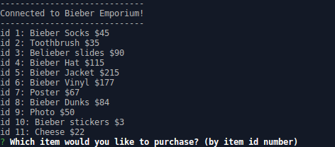

biebay
Mock store Command Line Interface (CLI) used to purchase items/merchandise or to manage inventory as an administrator.

Crystal Collector
made with jQuery
New York Times Article scraper
Made using ReactJS + MongoDB Express/Axios etc.
Application made to scrape The New York Times web articles
ability to filter by date, save articles to a database etc.
Bootstrap + HTML setup
A Frontend application utilizing jQuery + JS and Giphy's API to present gifs of the users liking.
Mock store Command Line Interface (CLI) used to purchase items/merchandise or to manage inventory as an administrator.
made with jQuery
This online recreation of Apples To Apples gives players the opportunity to play with others, acquire rankings and digitilizes the card game everyone enjoys!
Front-end application utilizing jQuery + JS